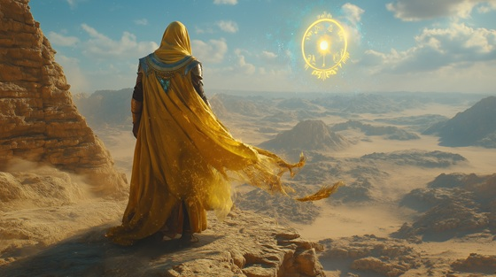

Drift into the invisible force behind all life in “Breath of Creation”, an atmospheric metal tribute to Amun — the supreme, unseen god of ancient Egypt. He is the wind before the storm, the silence behind the word, and the power that shaped the world without being seen.
Who is Amun? Amun is one of the most powerful and mysterious gods in the Egyptian pantheon. Originally a local deity of air and wind, he rose to become the king of gods when merged with Ra as Amun-Ra. He was called “the hidden one”, a force present in all things but invisible to the eye. Amun was worshipped as the source of creation, protector of kings, and the breath that gives life to the gods themselves. His influence stretched across dynasties, and he was central to the divine legitimacy of pharaohs.
Amun: Breath of Creation
Before the word, before the flame
I was the breath that bore the name
Unseen, unknown, I shaped the stars
A god whose voice leaves only scars
I move in silence, speak in storms
The wind that whispers distant forms
Though none may see, all feel my hand
In life and sky, in flame and sand
No eye can find, no cage can hold
The force behind the myths of old
I am Amun — breath of light
The hidden king beyond the sight
I am the air, the sacred sound
The god who moves but is not found
The throne unseen, the storm divine
Creation breathes through voice and sign
I wear the crown behind the veil
A god of wind, of staff and sail
From lotus dawn to dusk's return
My silence speaks, the cosmos learns
They called me sky, they called me sun
They crowned me Ra and made me one
But I remain beyond the flame
The voice behind the sacred name
No eye can find, no cage can hold
The force behind the myths of old
I am Amun — breath of light
The hidden king beyond the sight
I am the air, the sacred sound
The god who moves but is not found
The throne unseen, the storm divine
Creation breathes through voice and sign
In temple dark and starlit dome
They praise the king who walks alone
Though gods may rise and pharaohs fade
I dwell in wind, in prayer made
My name reborn in whispered psalms
My touch in storms, my will in calms
No statue holds me, none contain
The sacred breath beyond the flame
No eye can find, no cage can hold
The force behind the myths of old
I am Amun — breath of light
The hidden king beyond the sight
I am the air, the sacred sound
The god who moves but is not found
The throne unseen, the storm divine
Creation breathes through voice and sign
When all is gone, and stars are dust
The voice remains, the breath we trust
My silence speaks where time is slain
I rise, unseen, and rule again
So light the flame, but seek the breeze
For in the wind, the gods still breathe
I am Amun, behind the sun
The breath of all, the hidden one